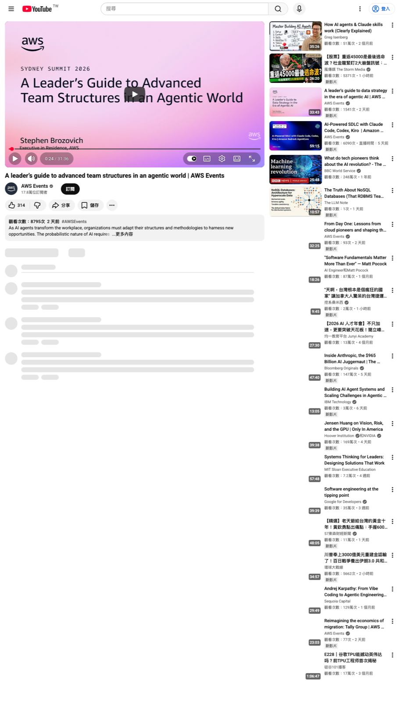
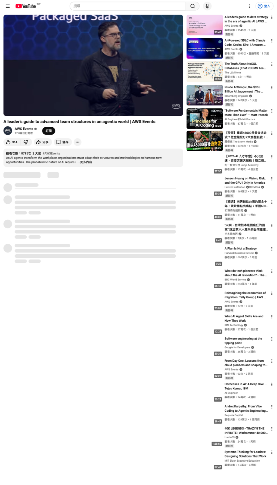
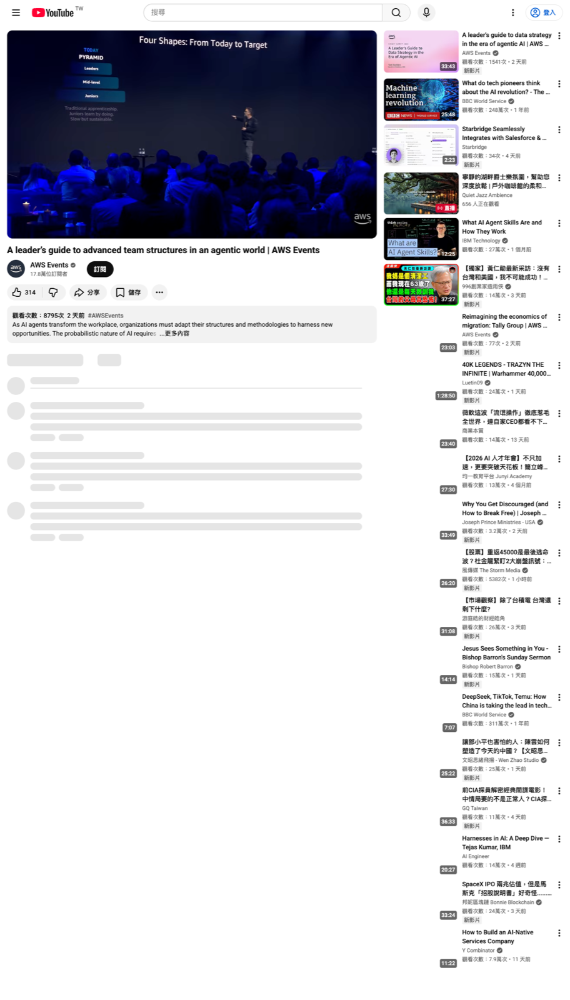
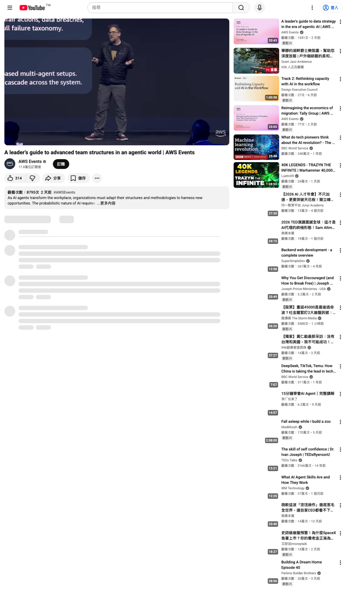

先看結論：模型只是變數之一

Stephen Brozovich 在 AWS Events 這場演講中，把 Agentic AI 的組織問題拆成四條線：economics、talent、structure、governance。這個拆法有用，因為它把「要不要導入 AI」轉成可操作的問題：哪一條 workflow 值得用 AI，誰能負責，組織怎麼承接，風險怎麼被約束。
AI 先改變人才市場的入口
演講先處理一個常見誤判：AI 的衝擊不一定先表現為大規模失業。講者引用 Anthropic 的研究，區分 theoretical exposure 與 observed exposure。很多任務理論上可以交給 LLM，但企業實際使用的範圍還小很多。
真正已經發生的變化，是 entry-level hiring 放緩。這代表企業短期看見 AI ROI 時，最容易先砍 junior pipeline。這個動作短期看起來合理，長期會把 senior 的生成路徑切斷。
If you stop training your juniors, where do your seniors come from? — 影片約 18:27–19:11
- Fact：影片說最受 AI exposure 的職群沒有出現系統性失業上升。
- Inference：企業的第一個風險是 junior learning path 被壓縮，而非全部職位瞬間消失。
- Need-verify：影片引用的 14% junior hiring slowdown 等數字，若要對外引用，需要回查原研究。
Economics：每條 workflow 各自判斷

講者把 AI 採用路徑拆成三種：use、compose、build。Use 是買端到端方案，速度快、差異化低。Compose 是串接 frontier API 與企業自己的 context，速度與差異化折中。Build 是訓練或 fine-tune 自己的模型，控制高，但成本與速度壓力最大。
- 低差異化、急著驗證：先 use。
- 流程 context 很重要、但模型本身未形成護城河：compose。
- 高頻、高差異化、經濟性已被驗證：才進 build。
- 還講不清楚 workflow economics：先不要把公司定位成 build shop。
Talent：domain expert 加 agent，會壓過只會寫 code 的優勢
演講的第二條線是人才。過去技術人的價值常被定義成能寫 code、設 schema、ship feature。Agentic AI 之後，稀缺能力會轉向 orchestrate：定義問題、安排 agent、評估輸出、修正方向、必要時推翻 AI。
影片用 Anthropic Build with Claude hackathon 當例子：前三名來自律師、醫生等 domain expert，而非職業 developer。這個例子提醒我們，domain judgment 加上 AI 建構能力，會重新排序人才市場；工程能力仍然重要，但它需要和產品、法規、客戶脈絡接上。
- 工程師的價值會往系統設計、驗證、架構邊界移動。
- Domain expert 的價值會上升，因為他們掌握客戶、法規、產品細節。
- Recruiting 應該看 curiosity、first principles、customer focus、跨域協作，年度框架名稱只能當輔助訊號。
Team shape：pod 可以小，公司不能斷層

講者把團隊形狀分成四種。Pyramid 是傳統大量 junior、少量 senior。Diamond 是砍掉 junior、堆中層 oversight，講者視為陷阱。Inverted pyramid 是 3–5 位 senior engineer 搭配 AI 執行，適合新工作 pod。Hourglass 是公司層級仍保留 junior pipeline，讓未來 senior 能長出來。
- 條件：AI 讓 senior pod 執行速度大幅提高。
- 機制：handoff 變少，agent 補部分 specialist depth。
- 結果：new work 的小隊會更小、更 senior-heavy。
- 驗證：觀察 review bottleneck、incident ownership、junior learning outcomes，而不是只看 code 產量。
Structure：Model A 要退出，B 與 C 要配合
傳統 IT ops 的 Model A 把 build 與 run 分開，靠 ticket、runbook、SLA 維持秩序。講者判斷這套在 agentic world 會失效。原因是 agent 的行為帶有變異，且 security、architecture、foundation services 會進入 runtime policy 與 platform 設計。
Model B 是 embedded pod：同一組人 build、run、debug agent。它適合小規模，因為 context gap 小。Model C 是 pods + platform：platform 提供 runtime、memory、identity、observability 與 guardrails，pod 保留 workflow 與模型選擇自主權。
- 小規模：先讓 2–3 個 pod 用 Model B 跑出責任鏈。
- 中大型：補 Model C，避免每個 pod 各自重造 auth、logging、policy、cost controls。
- 核心判準：platform 要提供路，不要把 pod綁死。
Governance：把政策寫成基礎設施

治理是最後一條線。影片引用 Singapore Model AI Governance Framework for Agentic AI，重點包括 risk assessment、human accountability chain、technical guardrails、end-user transparency。這些原則要進入系統設計，不能只留在政策文件。
- Who is the agent? Who authorized it?
- What is the agent allowed to do?
- Is the agent performing as expected?
- Can we audit what it did?
最重要的架構點，是 policy enforcement 應放在 LLM loop 外部。安全團隊定義 policy，工程團隊寫 agent；gateway 在 request 進模型前先做身分、授權、權限、稽核約束。
Monday morning：六步驟
- 選一條 workflow，判斷 use、compose、build。
- 決定 pod 成員，3–5 位 senior engineer 為上限。
- 誠實判斷現在是 Model A、B 或 C。若還是 A，先規劃退出。
- 建立 governance：identity、authorization、observability、audit。
- 投資 senior domain expert，因為客戶、法規、產品細節壓不掉。
- 保護 junior pipeline，別用短期 ROI 切斷 2034 年的 senior 來源。
原影片：https://youtu.be/O7u6myBRsns